The first systematic investigation into generative post-training for UMMs — bridging visual understanding and generation through high-level semantic proxies.
†Anonymous ECCV 2026 Submission · Paper #3064
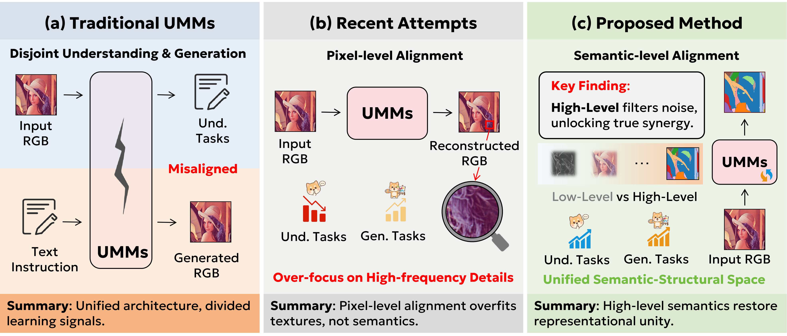
Unified multimodal models (UMMs) strive to consolidate visual understanding and visual generation
within a single architecture. However, prevailing training paradigms independently optimize understanding
via sparse text signals and generation through dense pixel objectives.
Such a decoupled strategy yields misaligned representation spaces, isolating visual understanding
from generation and hindering their mutual reinforcement.
This work presents the first systematic investigation into generative post-training,
where we formulate hierarchical visual tasks as generative proxies to bridge the isolation in UMMs.
Our empirical investigation reveals that high-level semantic tasks, particularly image segmentation,
serve as optimal proxies. Unlike low-level tasks that distract models with texture details,
segmentation provides structural semantics that significantly enhance both vision-centric perception
and generative layout fidelity.
Building upon these insights, we introduce Semantic Generative Tuning (SGT),
a novel paradigm that leverages segmentation as a generative proxy to align and synergize
multimodal capabilities. Extensive evaluations show that SGT consistently improves both
multimodal comprehension and generative fidelity, achieving a
6.02% gain on CV-Bench over BAGEL and a 90.0% score on GenEval.
We compare three paradigms for training unified multimodal models and pinpoint the critical gap.
Understanding and generation are optimized independently with divergent supervisory signals, resulting in misaligned representations and no synergy between the two capabilities.
MisalignedRecent methods (ReCA, ROSS, GenHancer) use pixel-space reconstruction as a proxy. While yielding some gains, this over-emphasizes textures and distracts from semantic reasoning.
SuboptimalSGT leverages image segmentation as a generative proxy — high-level semantic structure that naturally bridges understanding and generation through shared semantic space.
Optimal ✓SGT formulates image segmentation as a generative post-training objective within UMMs. The framework is architecture-agnostic and validated across two fundamentally different UMM designs.
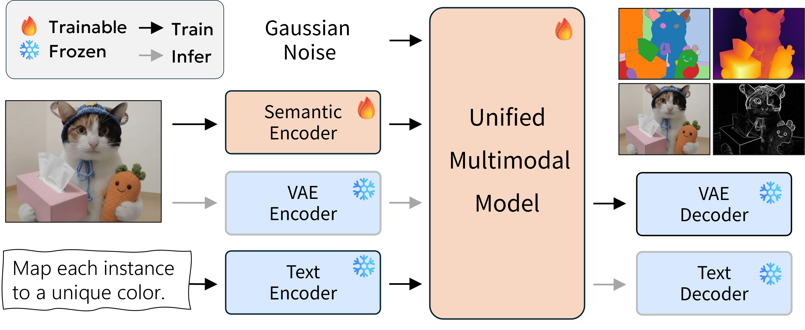
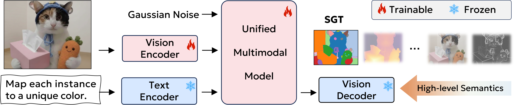
Mixture of Transformers with native interleaved training. Layer-wise feature sharing throughout the network enables seamless SGT integration.
Large-scale UMMFrozen pretrained VLM paired with a diffusion module trained from scratch. Hidden states serve as semantic guidance for the generative module.
Efficient UMMOur hierarchical task study across BAGEL and OmniGen2 reveals consistent patterns guiding SGT's design.
Image segmentation consistently outperforms mid-level (depth estimation) and low-level (edge detection) tasks on all understanding benchmarks. High-level supervision aligns with reasoning demands, while texture-focused tasks cause overfitting to irrelevant details.
Generative tuning fortifies visual perception (vision-centric tasks, spatial reasoning, hallucination resistance) while chart/math reasoning remains static. Visual supervision enhances representation quality but does not impart logical priors.
Regardless of semantic granularity, all proxy tasks consistently improve generative spatial fidelity — especially for position-aware tasks. Reconstructing visual structure forces accurate spatial layouts, naturally boosting positional prompt adherence.
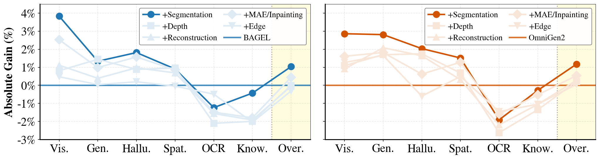
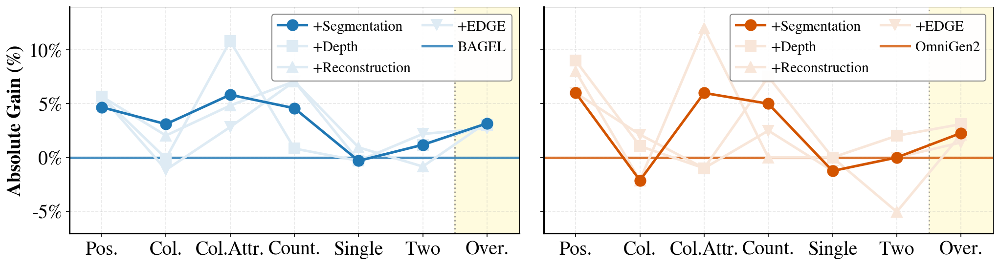
SGT-BAGEL and SGT-Gen2 consistently outperform their baselines and surpass competitive UMMs across understanding and generation benchmarks.
| Model | Params | Visual Understanding | Visual Generation | ||||||
|---|---|---|---|---|---|---|---|---|---|
| MMVP↑ | VSR↑ | Hallu.↑ | MMStar↑ | RWQA↑ | MathV.↑ | GenEval↑ | GEdit↑ | ||
| Small-scale Models (≤ 4B) | |||||||||
| Show-o 512 | 1.3B | 50.00 | 54.26 | 46.06 | – | 38.17 | – | 68.0 | ✗ |
| Harmon | 1.5B | 60.00 | 60.88 | 46.69 | 38.00 | 48.00 | 33.70 | 73.0 | ✗ |
| UniLIP | 2B | 73.00 | 65.55 | 60.57 | – | 64.18 | – | 90.0 | – |
| UniMRG | 3.6B | 74.67 | 73.90 | 64.56 | – | 66.01 | – | 55.8 | ✗ |
| OpenUni | 2B | 71.67 | 66.69 | 60.88 | – | 65.23 | – | 51.0 | – |
| OmniGen2 | 3B+4B | 65.00 | 77.52 | 62.35 | 55.07 | 64.41 | 63.50 | 76.0 | 6.63 |
| ✦ SGT-Gen2 (Ours) | 3B+4B | 68.33 | 78.85 | 64.25 | 57.07 | 65.10 | 64.00 | 79.1 | 6.83 |
| Large-scale Models (≥ 7B) | |||||||||
| Chameleon | 7B | 50.00 | – | 31.13 | 28.93 | 39.00 | 21.90 | 39.0 | ✗ |
| Janus-Pro | 7B | 63.00 | 71.03 | 60.15 | 46.80 | 41.83 | 42.60 | 80.0 | ✗ |
| UniWorld-v1 | 7B+12B | 77.67 | 83.34 | 68.35 | 63.90 | 67.58 | 68.20 | 84.0 | 4.85 |
| BAGEL | 7B+7B | 83.00 | 80.45 | 68.34 | 67.46 | 71.26 | 73.10 | 88.0 | 6.64 |
| ✦ SGT-BAGEL (Ours) | 7B+7B | 83.33 | 81.54 | 70.24 | 68.33 | 72.42 | 73.90 | 90.0 | 6.94 |
SGT (segmentation) yields the largest gains across understanding benchmarks while achieving competitive generation performance.
| Method | CV-Bench↑ | MMVP↑ | VSR↑ | SIBench↑ | POPE↑ | Hallusion↑ | GenEval↑ | GEdit↑ |
|---|---|---|---|---|---|---|---|---|
| Base: BAGEL | ||||||||
| BAGEL (Base) | 73.21 | 83.00 | 80.45 | 48.95 | 85.69 | 68.34 | 78.21 | 6.52 |
| + SFT only | 74.61 | 82.67 | 80.69 | 49.34 | 86.77 | 67.92 | 77.18 | 6.49 |
| + SFT + Edge | 74.56 | 83.67 | 80.83 | 49.51 | 86.48 | 68.66 | 79.96 | 6.72 |
| + SFT + Reconstruction | 75.23 | 83.33 | 80.83 | 50.59 | 87.98 | 68.03 | 80.82 | 6.75 |
| ✦ + SFT + SGT (Ours) | 79.23 | 83.33 | 81.54 | 50.18 | 88.32 | 70.24 | 80.95 | 6.94 |
| Base: OmniGen2 | ||||||||
| OmniGen2 (Base) | 65.94 | 65.00 | 77.52 | 43.29 | 85.97 | 62.35 | 76.58 | 6.63 |
| + SFT only | 65.99 | 66.00 | 77.61 | 44.37 | 86.25 | 64.35 | 74.54 | 6.32 |
| + SFT + Edge | 66.67 | 65.33 | 77.99 | 45.51 | 86.10 | 63.72 | 77.45 | 6.79 |
| + SFT + Reconstruction | 66.71 | 66.33 | 78.18 | 45.41 | 85.92 | 65.19 | 77.53 | 6.81 |
| ✦ + SFT + SGT (Ours) | 66.91 | 68.33 | 78.85 | 45.37 | 87.29 | 64.25 | 78.86 | 6.83 |
We probe feature distributions and attention dynamics to uncover the mechanisms behind SGT's improvements.
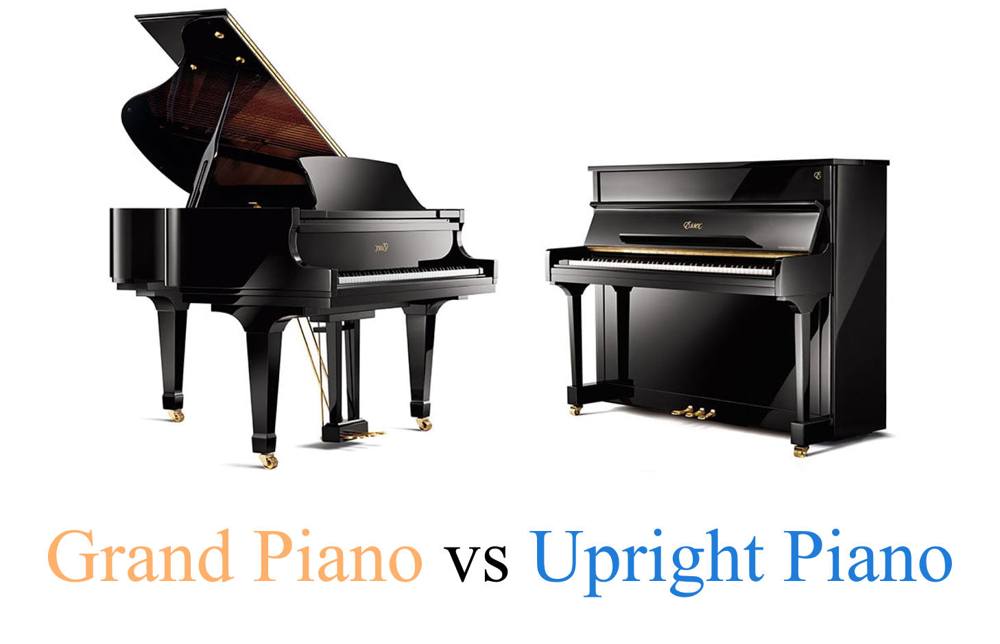
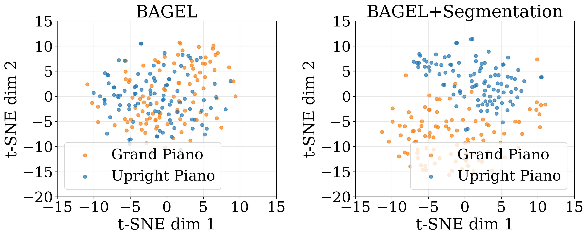
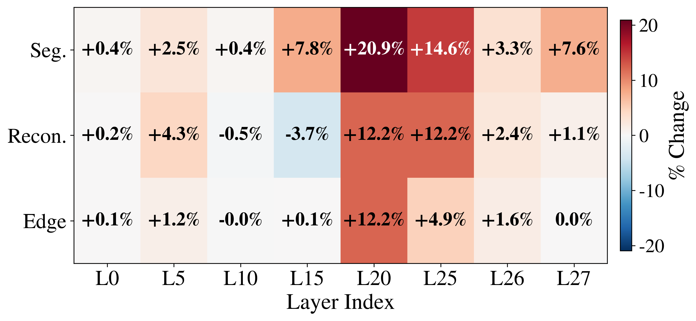
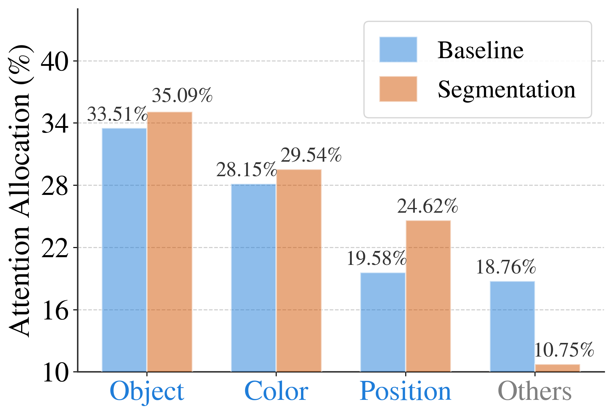
SGT is scalable — performance improves monotonically with more segmentation data, and a 2:1 Seg:VQA batch ratio is consistently optimal.
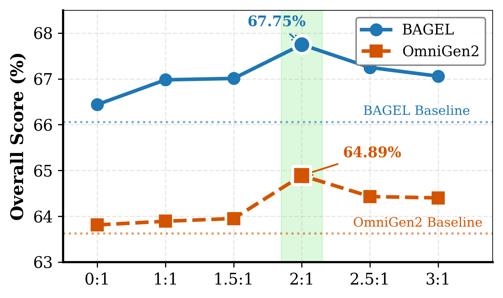
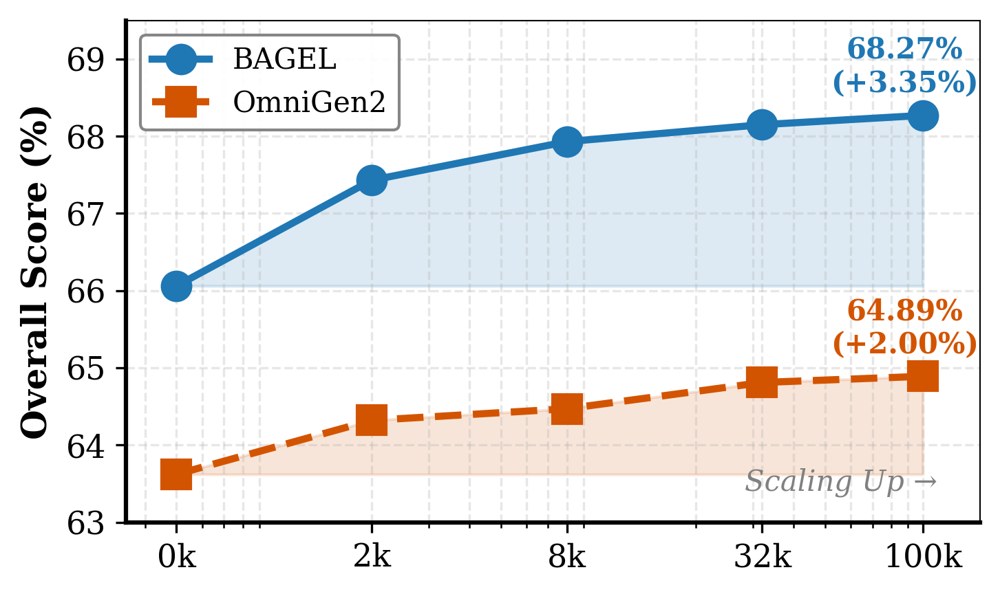
If you find SGT useful in your research, please consider citing our work.
@inproceedings{anonymous2026sgt,
title = {Semantic Generative Tuning for Unified Multimodal Models},
author = {Anonymous Authors},
booktitle = {European Conference on Computer Vision (ECCV)},
year = {2026},
note = {Submission \#3064}
}